Diyet · gıda kütüphanesi görsel dili · 16 Kasım 2026
On bir deneme, hepsinde aynı on iki gıda: haşlanmış yumurta, beyaz peynir, tam buğday ekmeği, avokado, tavuk, bulgur pilavı, yoğurt, süt, elma, köfte, mercimek çorbası, ceviz. Hepsi diyet programındaki kalemlerden. Aynı listeyi kullanınca stiller yan yana adil karşılaştırılıyor.
Uygulamada nasıl durur
İkonlar A1 setinden kesildi. Koyu temada ayrı bir koyu zemin seti (A5) kullanıldı. Asıl üretimde zemin şeffaf olacak, tek dosya iki temada çalışacak.
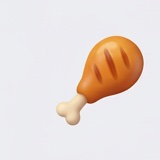
Izgara tavuk2 muadil150 g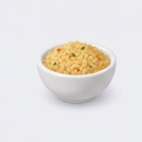
Bulgur pilavıveya 2 dilim ekmek4 yk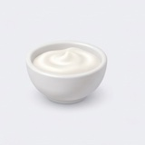
Yoğurt1 kâse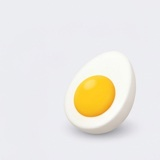
Yumurta3 adet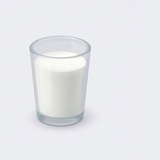
Süt2 bardak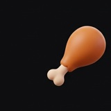
Izgara tavuk2 muadil150 g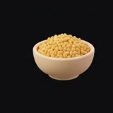
Bulgur pilavıveya 2 dilim ekmek4 yk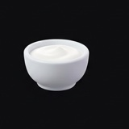
Yoğurt1 kâse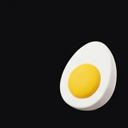
Yumurta3 adet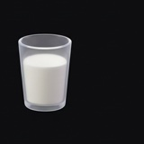
Süt2 bardakA · Sevimli 3D
Basit, tombul formlar, mat yumuşak malzeme, az doku. Uygulamanın sakin, tek renkli arayüzüyle en iyi anlaşan aile bu.
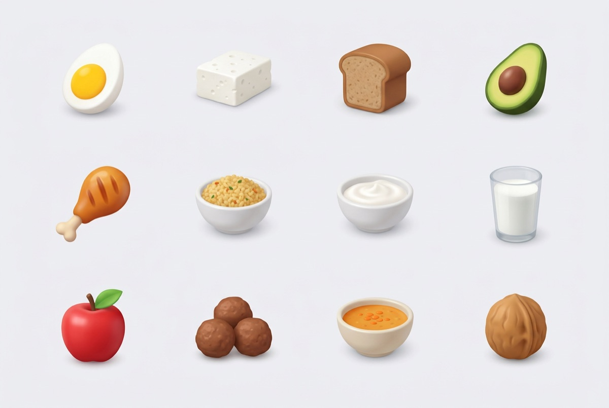
Ne: Apple emojisine yakın, mat ve tombul. Ayrıntı az; 44 px'te bile ne olduğu okunuyor. Kâseler ve bardak aynı aileden.
Zayıf yanı: ceviz ve köfte kahverengi yuvarlak olarak birbirine yakın; üretimde ayırt edici ayrıntı (cevizin kabuk çizgisi, köftenin ızgara izi) istenmeli.
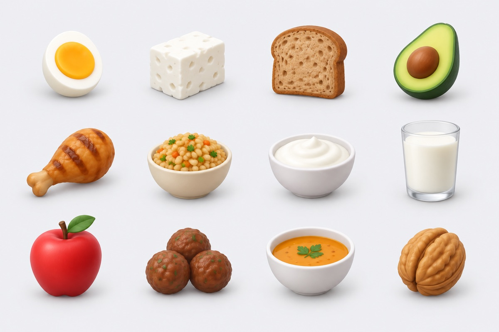
Ne: aynı yön, biraz daha gerçekçi doku (ekmek gözenekleri, tavukta ızgara izi). İştah açıcı.
Zayıf yanı: küçük boyutta doku gürültüye dönüşüyor; A1'den daha az "ikon".
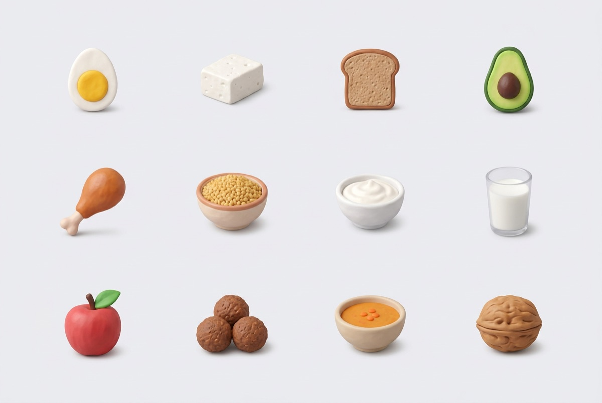
Ne: elle yoğrulmuş oyun hamuru hissi, pastel. En "tatlı" olanı.
Zayıf yanı: bulgur ve mercimek gibi Türk yemeklerinde ayrıntı kayboluyor; ciddiyet algısı düşebilir (diyetisyen paneli de kullanacak).
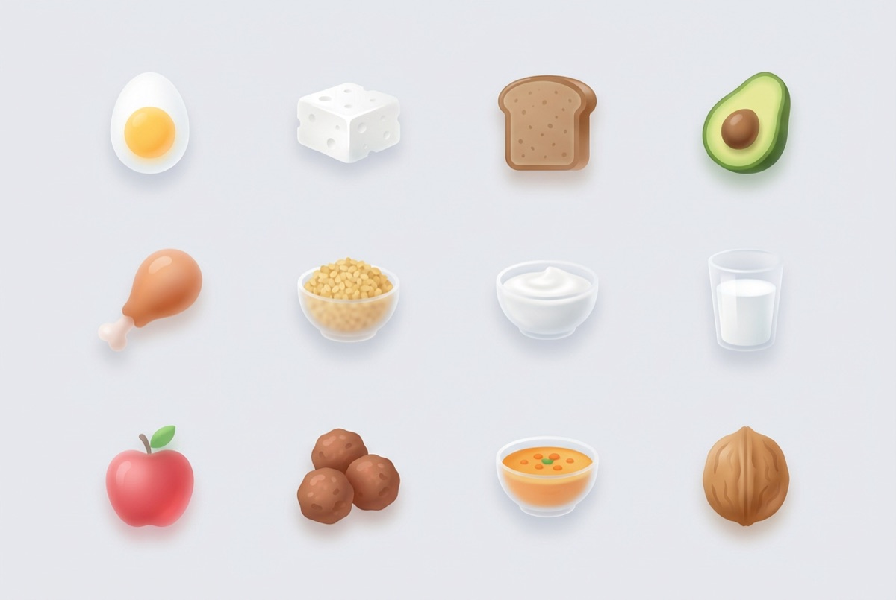
Ne: yarı saydam, yumuşak parıltılı. Kâse ve bardaklarda çok şık.
Zayıf yanı: elma ve tavuk soluk, iştah açmıyor; koyu temada saydamlık kaybolur.
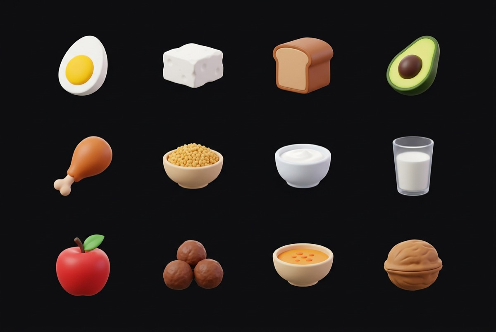
Ne: koyu temanın sınavı. Kenar ışığı sayesinde formlar zeminden ayrılıyor.
Not: asıl üretimde ayrı koyu set yapmayacağız; şeffaf zeminli tek set iki temada kullanılır. Bu deneme, stilin koyuda da çalıştığını gösteriyor.
B · Düz çizim
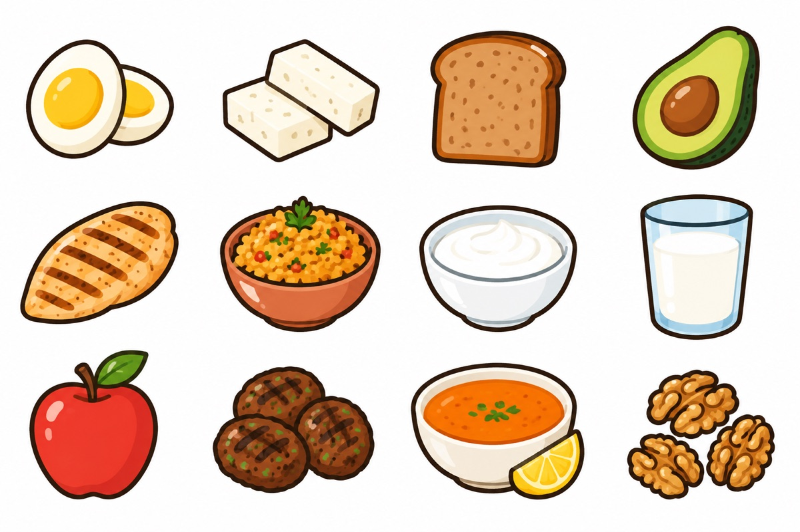
Ne: ikinci referansın dili: kalın koyu kontur, düz renk. Çok küçük boyutta en net okunan stil; dosyalar küçük.
Zayıf yanı: koyu temada siyah kontur kaybolur, ayrı kontur rengi gerekir. Uygulamanın inceliğiyle çocuksu bir zıtlık yaratıyor.
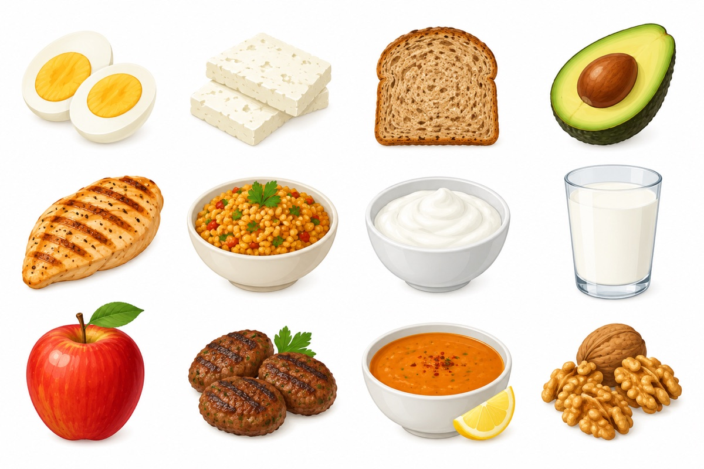
Ne: üçüncü referansın dili: konturdan arınmış, katmanlı düz şekiller, hafif gölge.
Zayıf yanı: stok ikon seti hissi; "tek seferde üretilmiş" görünme riski en yüksek olan bu.
C · Gerçekçi
İlk denemede GPT modeline 3D istendi ama sonuç gerçekçiliğe kaydı. Ayrıca bir de doğrudan fotoğraf denendi.
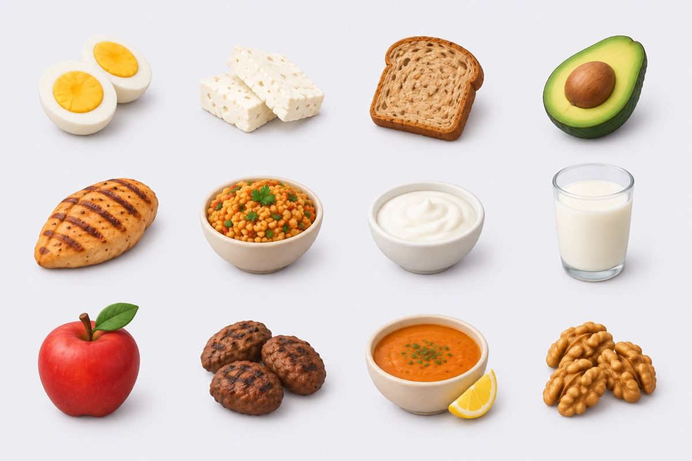
Ne: porsiyonu en doğru anlatan. Bulgur, mercimek çorbası, beyaz peynir tanınıyor.
Zayıf yanı: ikon değil yemek fotoğrafı gibi; liste içinde ağır duruyor.
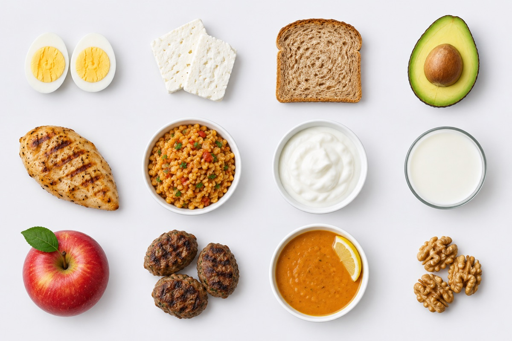
Ne: ilk prototipte önerdiğim "aynı tabak, aynı açı" kuralı.
Zayıf yanı: üstten bakışta bardak ve kâse tanınmıyor; ilk referanstaki sıcaklık yok.
Sonraki adım
Cute stylized 3D food icon, toy-like, chunky rounded proportions, smooth soft-touch matte material like Apple 3D emoji, minimal texture, clean saturated colors, soft key light top-left, 3/4 front view, single item centered, transparent background, no text.
Tutarlılık için her üretimde A1'den 4-5 ikon referans görsel olarak verilir.
img/160 ve img/320 WebP olarak repoya girer; kayıt img alanıyla bağlanır.